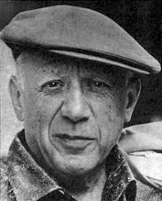
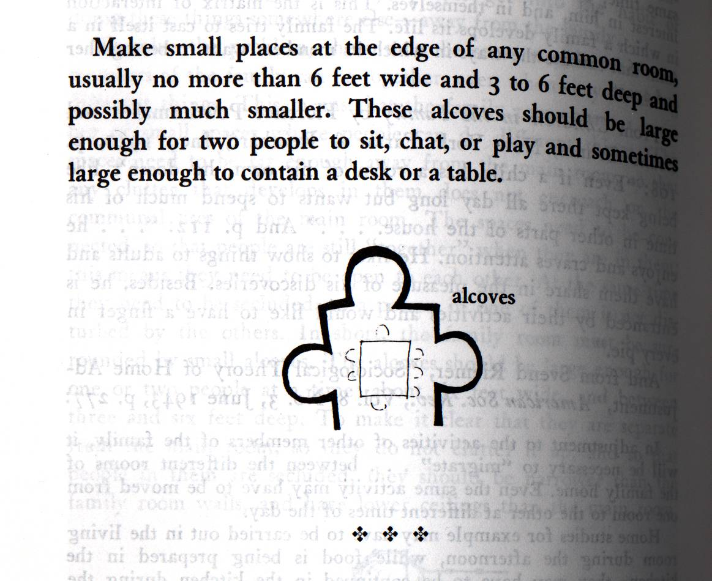
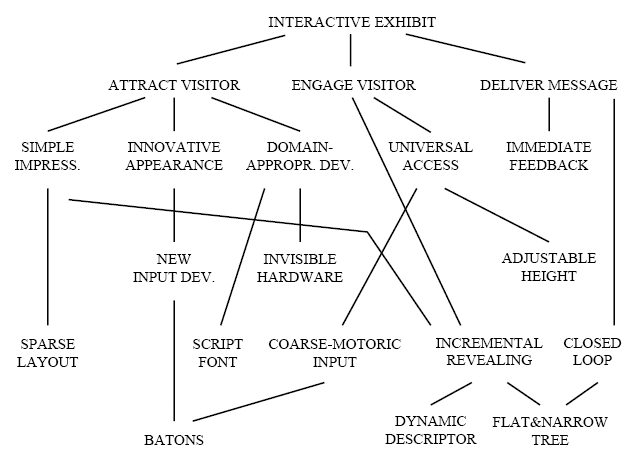
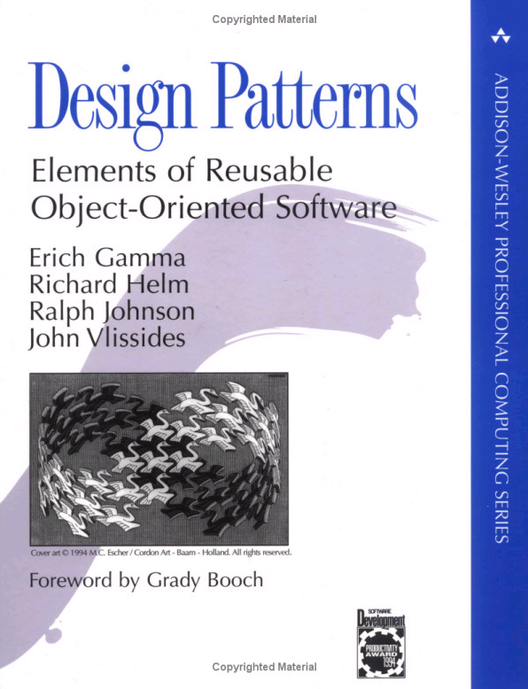
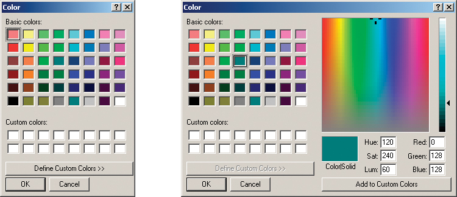
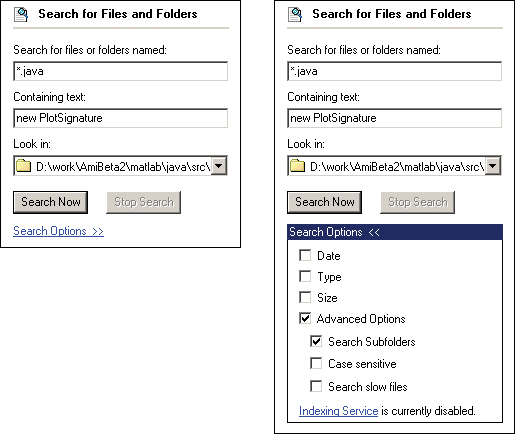
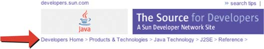
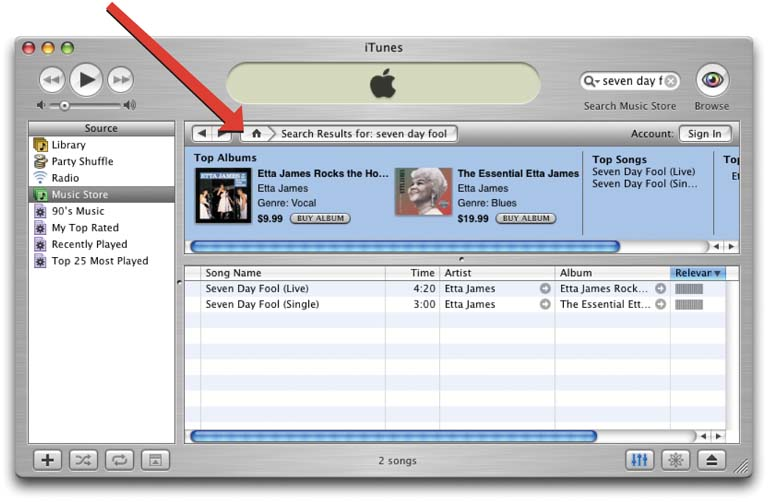

Design Patterns: UIs, Games, Learning
Design Patterns: UIs, Games, Learning
A survey of how design patterns are used to codify and share design knowledge — from architecture, through user-interface design and game design, to learning and course design.
Topics
- Motivation
- Design Patterns in UI Design
- Design Patterns in Game Design
- Design Patterns in Learning
- Closing Discussions
Design = Solutions
- Design is about finding solutions.
- Unfortunately, designers often reinvent solutions instead of reusing them.
- Two persistent problems:
- It’s hard to know how things were done before.
- It’s hard to know why things were done a certain way, and how to reuse the solution.
How Can We Codify Design Knowledge?
- An effective and flexible design is difficult to get “right” the first time.
- Yet experienced designers do make good designs.
- New designers are usually overwhelmed by all the design options available.
- Experienced designers evidently know something inexperienced ones don’t — what is it?
How Experienced Designers Solve a Problem
- Expert designers usually do not solve every problem from first principles — they reuse solutions that have worked for them in the past.
- When they find a good solution, they use it again and again.
- Such experience is part of what makes them experts.
- These kinds of experiences can be recorded as design patterns.
Excerpt from Last Week
“Good artists borrow (from other artists), but great artists steal!” — Pablo Picasso
- Compelling visual design takes practice and experience, a natural part of which is study and critique of others’ work.

Black-and-white portrait photograph of Pablo Picasso wearing a flat cap, illustrating the quote about artists borrowing and stealing ideas from one another
Novelists uses Patterns
- Novelists and playwrights rarely design their plots from scratch.
- They follow patterns like “Tragically Flawed Hero” (Macbeth, Hamlet, etc.) or “The Romantic Novel” (countless romance novels).
Illustration of Hamlet, referenced as an example of the “Tragically Flawed Hero” narrative pattern used repeatedly by playwrights
Game Players use Patterns
- Chess players, Go players, and basketball players all rely on “patterns.”
- Examples shown: the 1-4 offense pick-n-roll in basketball, a star-point Joseki opening in Go, and the Queen’s Gambit in chess — all recognised, reusable patterns of play.
The Design Methods Hierarchy
- Design knowledge can be arranged in a hierarchy from concrete to abstract:
- Design Idioms, Specific Knowledge and Tips (most concrete)
- Design Patterns
- Design Principles
- Design Philosophy (most abstract)
Design Patterns vs. Design Guidelines
- Design guidelines can be either abstract or concrete.
- Abstract guidelines usually do not suggest how to solve a problem.
- Concrete guidelines are usually too tailored to a specific interface.
- Guidelines assume absolute validity, while design patterns emphasize effectiveness in a particular context.
- Guidelines are more useful for describing requirements; patterns are useful tools for translating requirements into specific software solutions.
Patterns vs. Idioms
- Not every design idea that uses the pattern syntax is actually a pattern.
- If an idea is too specific (e.g., programming-language specific), it is not a pattern — such specific ideas are called idioms.
- Patterns also cannot be too general — it must be clear how the pattern should be applied in a context.
Patterns vs. Lexicon/Vocabulary
- If a technique appears so often in a domain that everyone knows and uses it in almost any situation, it is most likely not a pattern — it is part of the domain’s basic vocabulary.
- Example, in game design: Player, Stage, Enemy, Gun shots — these are lexicon, not patterns.
What are Design Patterns…
- “Patterns communicate insights into design problems, capturing the essence of the problems and their solutions in a compact form. They describe the problem in depth, the rationale for the solution, and some of the trade-offs in applying the solution.” — The Design of Sites, Van Duyne et al., 2003
- “Each pattern describes a problem which occurs over and over again in our environment, and then describes the core of the solution to that problem, in such a way that you can use this solution a million times over, without ever doing it the same way twice.” — A Pattern Language, Alexander et al., 1977
- “A pattern is the abstraction from a concrete form which keeps recurring in specific non-arbitrary contexts.” — Riehle and Zullighoven, Understanding and Using Patterns in Software Development
Design Patterns
A (very) brief history…
Christopher Alexander
- Patterns for Architecture, developed across several key works:
- The Timeless Way of Building
- A Pattern Language
- The Oregon Experiment
- Organised across levels: Towns, buildings, construction → a Network → a Language.
Cover of “The Timeless Way of Building” by Christopher Alexander, one of his foundational texts introducing the concept of design patterns in architecture
Christopher Alexander
Pattern 115: Courtyards Which Live
- Courtyards built in modern buildings are very often dead — intended as private open spaces but ending up unused, full of gravel and abstract sculptures.
- Three ways such courtyards fail: too little ambiguity between indoors and outdoors; not enough doors into the courtyard; too enclosed.
- Therefore: Place every courtyard so there is a view out to a larger open space; place it so at least two or three doors open into it and natural paths cross it; and at one edge, beside a door, build a roofed veranda or porch continuous with both the inside and the courtyard. Build the porch according to the patterns for ARCADE (119), GALLERY SURROUND (166), and SIX-FOOT BALCONY (167).
- (from A Pattern Language, Alexander et al., 1977)
Photograph of an elegant tiled courtyard with arched colonnades and potted palms, illustrating Alexander’s “Courtyards Which Live” pattern in a real building
The Nature of Design Patterns
- Not too general and not too specific.
- Meant to be used “a million times over, without ever doing it the same way twice.”
- Design patterns form a shared language for “building and planning towns, neighborhoods, houses, gardens, and rooms.”
- Example: a beer hall is part of a center for public life, yet also needs spaces for groups to be alone — solved by the ALCOVES pattern.
Example - Alcoves
- Pattern Title: Alcoves
- Context: Collaborative and common areas in buildings.
- Forces: Open spaces are inviting, but people want a sense of enclosure for private discussions.
- Problem Statement: Create a space that invites collaboration but also supports private discussion.
Example - Alcoves
Solution + Sketch
- Make small places at the edge of any common room, usually no more than 6 feet wide and 3 to 6 feet deep, and possibly much smaller. These alcoves should be large enough for two people to sit, chat, or play, and sometimes large enough to contain a desk or table.

Diagram from Alexander’s pattern language showing a puzzle-piece-shaped common room with small alcoves branching off it, illustrating the alcove pattern’s solution sketch
Pattern Languages
- Alexander emphasized the importance of pattern languages — more than just collections of patterns.
- Languages are sets of patterns that fill out a design space and are chosen to complement each other.
- The forces described in each pattern may explain its relations with other patterns.
A Pattern Language for Interactive Exhibits
- An example pattern language, organised hierarchically to guide exhibit design: from top-level goals like Attract Visitor, Engage Visitor, and Deliver Message, down through supporting patterns such as Simple Impression, Innovative Appearance, Universal Access, Incremental Revealing, and Closed Loop.
- (From Borchers, 2001)

Tree diagram of a pattern language for interactive exhibits, branching from “Interactive Exhibit” into goals like Attract Visitor, Engage Visitor, and Deliver Message, and down into specific patterns such as Sparse Layout, Batons, Incremental Revealing, and Closed Loop
Discussion
- What’s the difference between design patterns and some experts’ tips in design?
- Why is context required in documenting a pattern?
- Can design patterns replace hands-on practice in design?
From Architecture to Computer Science
- In the early 1990s, Gamma et al. borrowed the idea from architecture and applied it to software engineering.
- Their patterns communicate object-oriented software design problems and solutions.

Cover of “Design Patterns: Elements of Reusable Object-Oriented Software” by Gamma, Helm, Johnson, and Vlissides — the influential “Gang of Four” book that brought Alexander’s pattern concept into software engineering
Patterns in HCI/UI Design
Key sources of interaction-design patterns:
- Borchers, 2001
- Tidwell, 2005 — Designing Interfaces
- Van Duyne et al., 2002 — The Design of Sites
- www.hcipatterns.org
- http://www.visi.com/~snowfall/InteractionPatterns.html
UI Patterns Categorized by Tidwell 2005
Tidwell organises UI patterns into categories such as:
- Information architecture and application structure
- Navigation, signposts and way finding
- Layout of page elements
- Actions and commands
- Visualization patterns
- Forms and controls
- Builders and editors
- Visual style and aesthetics
Extras on Demand
Description: Show the most important content up front, but hide the rest. Let the user reach it via a single, simple gesture.

Screenshot of an interface demonstrating the “Extras on Demand” pattern, showing primary content prominently while secondary options remain tucked away until requested
Extras on Demand
- Context: There’s too much content to show on the page, but some of it isn’t very important. You’d rather have a simpler UI but need to put the extra content somewhere.
- Solution: Ruthlessly prune the UI down to its most commonly used, most important items. Put the remainder into its own page or section, hidden by default. On the simplified UI, add a clearly marked button or link to the remainder, such as “More Options,” often using “>>” or “…” as the label.
Extras on Demand
Examples of the pattern in practice, showing how interfaces reveal additional options such as advanced settings or extended menus only when requested by the user.
Example interface screenshot illustrating “Extras on Demand,” where advanced or secondary options are collapsed behind a “More Options” style control
Breadcrumbs
Description: On each page in a hierarchy, show a map of all the parent pages, up to the main page.

Screenshot of a website showing a breadcrumb navigation trail across the top of the page, indicating the hierarchy of pages from the home page to the current page
Breadcrumbs
- Context: The application or site has a straightforward tree structure without much interlinking among elements. Users work their way up and down this tree via navigation or searching.
- Solution: Near the top of the page, show a line of text or icons indicating the current level of hierarchy, from the top level down to the current page, separated by a graphic or character — usually a right-pointing arrow — to indicate movement between levels.
Breadcrumbs
Examples of breadcrumb trails used across different websites to show users their location within a site hierarchy.

Two example website screenshots demonstrating breadcrumb trails used to show hierarchical navigation paths to users
Responsive Enabling
An example screenshot demonstrates the “Responsive Enabling” pattern, where interface controls become available progressively as the user completes each step.

Screenshot of an interface illustrating “Responsive Enabling,” where UI actions start disabled and become enabled as the user progresses through a task
Responsive Enabling
- Context: The UI walks the user through a complex step-by-step process, perhaps because the user is computer-naive or the task is rarely performed (as in a Wizard). You don’t want to force page-by-page navigation, but want to keep the interface stable.
- Solution: Most actions on the UI start off disabled — only actions relevant to the user’s first step are available. As the user makes choices and performs actions, more disabled items become enabled and brought into play.
Responsive Enabling
Examples show interfaces where controls are progressively enabled as the user completes each stage of a task, keeping the interface stable while guiding the user forward.
Patterns in Game Design
- Bjork, 2004, catalogued patterns of game design elements.
- Example: MILLEE (Kam et al.) uses a pattern-based framework to design educational games for developing countries.
Game Patterns Categorized by Bjork 2004
Bjork’s categories of game design patterns include:
- Game elements
- Resource and resource management
- Information, communication and presentation
- Actions and event patterns
- Narrative structures, predictability and immersion patterns
- Social interaction
- Goals
- Goal structures
- Game Sessions
- Game mastery and balancing
- Meta games, replayability and learning curves
Producer-Consumer
Description: The production of a resource by one game element that is consumed by another game element or game event.
- Examples include resource-producing buildings in real-time strategy games and the piece-generation mechanic in Tetris.
Producer-Consumer
Consequences:
- A concrete, and very common, pattern.
- Can regulate the flow of the game.
- Can increase the complexity of the game, especially if players can control the producer-consumer elements.
- Can increase the feeling of player control.
Producer-Consumer
Using the pattern:
- Production regulation: based on time or turn, player actions, game events, element configuration, continuous vs. one-time production, etc. Effects include what is produced, indicators to players, and play mode changes.
- Consumption regulation: based on and effects similar to production.
- Often used alongside related patterns such as Factory and Accumulator.
High Score Lists
Description: Give players the chance to rank themselves against other players who have previously played the game.
High Score Lists
- What’s the Context?
- What’s the Solution?
(Discussion prompt for learners to articulate the pattern themselves.)
Power-Ups
Description: Power-Ups are game elements that give time-limited advantages to the player who picks them up.
- Classic example: power-ups in Super Mario Bros.
Power-Ups
- What’s the context and solution of Power-Ups?
- Can you leverage Power-Ups in your project?
Paper-Rock-Scissors
Description: Sets of three or more actions form cycles where every action has an advantage over another action.
- Example: the rock-paper-scissors dynamic seen in fighting games like Street Fighter II.
Paper-Rock-Scissors
- Context: Game designers want to avoid a general winning strategy, encouraging players to observe opponents’ activities and promoting tension and randomness in the game.
- Solution: It’s your turn now — show how you can design such an element in your class project.
Patterns in Learning
- Pedagogical Patterns — www.pedagogicalpatterns.org
- A Pattern Language for Course Development — http://csis.pace.edu/~bergin/patterns/coursepatternlanguage.html
- PACT (Pattern-Annotated Course Tool)
- (Reference: Carle et al., 2006)
Discussion
- Is design pattern a silver-bullet in creating effective interfaces?
- Will design patterns destroy creativity?
What to Expect from Design Patterns?
- A common design vocabulary
- A documentation and learning aid
- An adjunct to existing methods
- A target for refining existing design
Summary
- Motivation for patterns
- What is a design pattern, and what is a pattern language
- A brief history of design patterns
- Examples of UI design patterns and game design patterns
A Parting Thought
- The best designs will use many design patterns that dovetail and intertwine to produce a greater whole.
- “It is possible to make buildings by stringing together patterns, in a rather loose way. A building made like this is an assembly of patterns. It is not dense. It is not profound. But it is also possible to put patterns together in such a way that many patterns overlap in the same physical space: the building is very dense; it has many meanings captured in a small space; and through this density, it becomes profound.”
- (from A Pattern Language, Alexander et al., 1977)